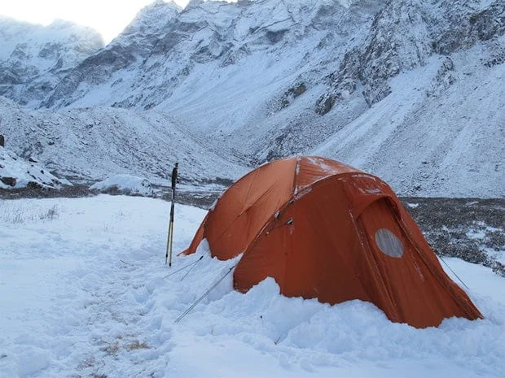

Установка палатки на снегу

Снежная площадка требует подготовки: сначала выберите место, защищенное от прямого ветра и потенциальных лавинных сходов, затем выровняйте и уплотните поверхность. Если поставить палатку на рыхлый слой сразу, опоры быстро просядут и тент потеряет натяжение.
После трамбовки полезно подождать несколько минут, чтобы снег схватился, и только потом ставить каркас. Такой порядок дает более устойчивую базу и уменьшает ночные деформации.
Обычные колышки в глубоком снегу часто не работают. Используйте снеговые якоря, закопанные мешки, лыжи или ледовые инструменты в качестве точек фиксации. Растяжки лучше выставлять симметрично и сразу с запасом по натяжению на усиление ветра.
Ориентируйте палатку так, чтобы наиболее узкая/аэродинамичная часть принимала основной ветер. Вход желательно располагать с подветренной стороны, чтобы уменьшить задувание снега внутрь при открытии.
Внутри важно контролировать конденсат: используйте вентиляционные окна и не перекрывайте их полностью даже в мороз. Сухой микроклимат в палатке напрямую влияет на качество сна и сохранение тепла в снаряжении.
Перед сном сделайте финальную проверку: растяжки, узлы, состояние дуг и точки опоры. Пять минут такой проверки вечером обычно экономят час проблем ночью при усилении погоды.